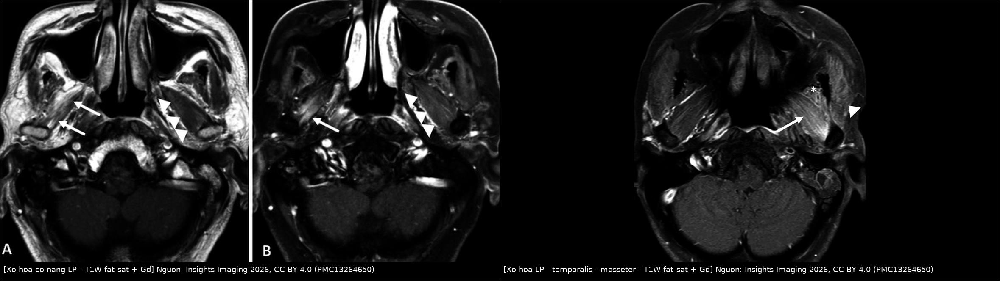
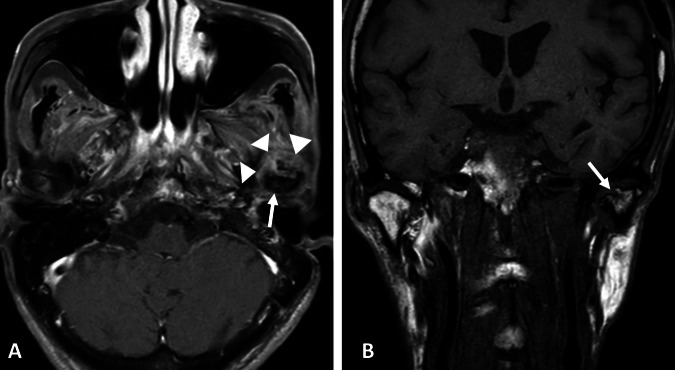
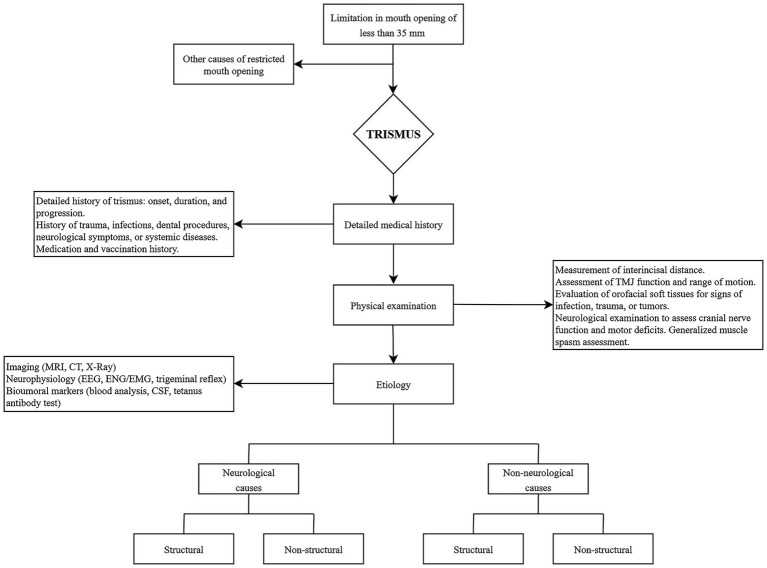
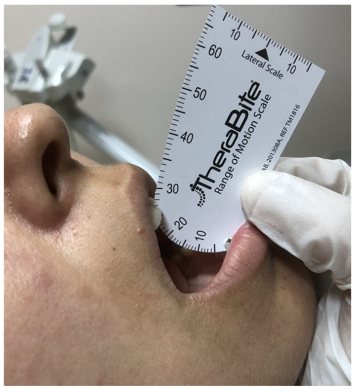
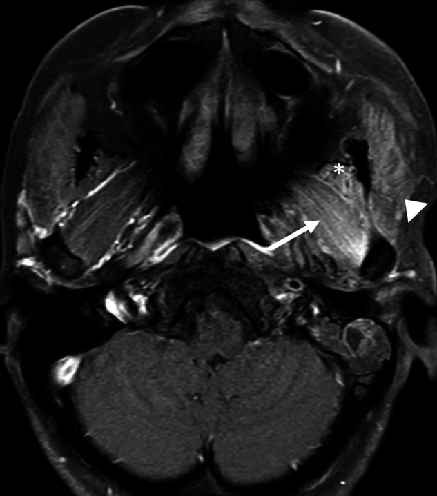
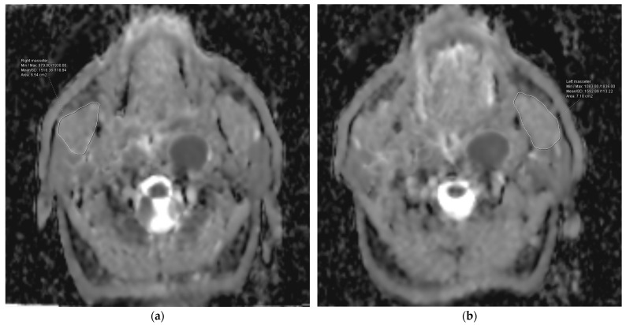

1761 — Trismus sau xạ trị đầu cổ / Radiation-induced trismus (RIT)
Tags: pattern:trismus pattern:xo-hoa pattern:teo-co vung:dau-co vung:ham-mat vung:khop-thai-duong-ham protocol:MRI protocol:lieu-OAR score:GTQ score:RTOG incidentaloma:khong
Mức chắc chắn (certainty): tổng hợp y văn (literature synthesis) — 1 tổng quan hệ thống hình ảnh 11 nghiên cứu/282 bệnh nhân (Insights Imaging 2026, PMC13264650, CC BY 4.0), 1 đoàn hệ 77 bệnh nhân ung thư vòm họng (NPC) với ADC cơ masseter và liều cơ masseter (Diagnostics 2024, PMC11505873, CC BY 4.0), 1 phân tích liều–đáp ứng 60 bệnh nhân VMAT (Technol Cancer Res Treat 2025, PMC12576174, CC BY-NC), 1 tổng quan điều trị (Front Neurol 2026, PMC13053315, CC BY 4.0), 1 meta-analysis hóa–xạ (J Clin Exp Dent 2024, PMC11078508, CC BY 2.5), 2 RCT tập cơ hàm (PMC11635747, PMC13038768), 1 meta 21 RCT phục hồi chức năng (PMC13609679) và 1 tổng quan cơ chế xơ hóa do xạ (PMC12731690). Không có ca nguyên văn của nhóm — 3 ca trong quiz là ca dựng từ ảnh + số liệu công bố, ghi rõ nguồn từng ảnh.
Câu chốt: trismus sau xạ không phải "cứng hàm do già" mà là xơ hóa cơ nhai do xạ (radiation-induced fibrosis, RIF). Ba con số phải thuộc: ngưỡng chẩn đoán MIO ≤ 35 mm (bình thường 40–60 mm); tỉ lệ gặp tới 60% sau xạ đầu cổ (44,7% trong đoàn hệ có chụp hình), và thêm hóa trị làm tăng nguy cơ gấp 2,55 lần (OR 2,55; 95% CI 1,53–4,23); liều trung bình cơ masseter ≥ 37,5 Gy làm nguy cơ 45,7% so với 11,9% (HR 4,89) — nên giảm liều cơ nhai ngay từ kế hoạch, và tập cơ hàm dự phòng không chứng minh được lợi ích (chênh +2,85 mm, khoảng tin cậy sau hiệu chỉnh mẫu nhỏ vắt qua 0).
1. Tổng quan bệnh học – cơ chế hình ảnh
1.1 TẠI SAO cơ nhai bị xơ hóa: chuỗi RIF
- Định nghĩa lâm sàng: trismus = giảm khả năng mở miệng chủ động tối đa, đo bằng MIO (maximal interincisal opening) — khoảng cách giữa bờ răng cửa trên và dưới khi bệnh nhân mở hết sức. Ngưỡng dùng trong hầu hết nghiên cứu xạ trị: ≤ 35 mm (Dijkstra; áp dụng ở PMC13038768, PMC13264650); người bình thường 40–60 mm (PMC13053315), một số tài liệu ghi 36–55 mm (PMC11078508). Tranh cãi: một số nhóm dùng ≤ 40 mm, nên luôn ghi ngưỡng đã dùng khi so sánh tỉ lệ giữa các bài.
- Cơ chế (vì sao hình ảnh lại như vậy): xạ → mất mao mạch + thiếu oxy mô → nguyên bào sợi biệt hóa thành nguyên bào cơ (myofibroblast) → tăng tổng hợp collagen I/III và ức chế men phân hủy collagen (MMP) → mô xơ co rút, cơ mất đàn hồi và ngắn lại. Đồng thời có tổn thương thần kinh V3 (nhánh vận động) và xơ hóa bao khớp → giảm cả biên độ lẫn lực mở miệng. RIF gặp ở tới 50% bệnh nhân ung thư đầu cổ sau xạ; xơ hóa độ 2–3 theo RTOG ở 30–50% (PMC12731690).
- Trên hình ảnh: cơ trong trường xạ teo nhỏ, mất mặt phẳng mỡ, tăng tín hiệu T2 (phù/xơ) và ngấm thuốc T1 sau tiêm so với bên đối diện; muộn hơn là thay mỡ (T1 sáng, T2 sáng, mất tín hiệu trên fat-sat). Bao khớp và đĩa khớp có thể dày, dính, mất tín hiệu, lồi cầu bào mòn, xẹp, xơ hóa. Thời điểm sớm nhất ghi nhận được thay đổi tín hiệu cơ trên MRI: 5 tháng sau xạ; trong tổng quan 282 ca, thời gian chụp trung vị 6,7 năm (5 tháng – 22 năm) (PMC13264650).
- Điều quan trọng cho bác sĩ CĐHA: trismus là chẩn đoán lâm sàng (đo mm); hình ảnh không chẩn đoán thay mà trả lời 2 câu: (1) có tái phát u xâm lấn khoang nhai không? (2) cơ nào bị xơ hóa/teo và mức độ bao nhiêu để chọn nơi tiêm botulinum hoặc mổ.
1.2 Số liệu định lượng phải thuộc
| Đại lượng | Con số | Nguồn |
|---|---|---|
| Ngưỡng trismus (MIO) | ≤ 35 mm; bình thường 40–60 mm | PMC13264650 / PMC13053315 |
| Tỉ lệ trismus sau xạ đầu cổ | tới 60%; 44,7% (126/282) trong đoàn hệ có chụp hình | PMC13264650 |
| Theo kỹ thuật xạ (cùng tổng quan) | xạ quy ước 37,5% · IMRT 40,6% · không ghi rõ 54,5% | PMC13264650 |
| Trismus tồn tại 2 năm sau hóa–xạ | ~30% (nuốt khó cùng thời điểm 40–70%) | PMC11635747 |
| Thêm hóa trị vào xạ | OR 2,55 (1,53–4,23), p = 0,0003, I² = 59% (1.474 vs 858 bệnh nhân) | PMC11078508 |
| RIF ở ung thư đầu cổ | tới 50%; xơ hóa RTOG độ 2–3 30–50% | PMC12731690 |
| Liều trung bình cơ masseter ≥ 37,5 Gy | trismus 45,71% vs 11,90%; HR 4,89 (2,66–7,93) | PMC11505873 |
| ADC trung bình cơ masseter trước hóa–xạ > 1.381,30 × 10⁻⁶ mm²/s | trismus 71,42% vs 6,12%; HR 11,17 (5,63–18,76); AUC 94,0%, Se 87,0%, Sp 85,2% | PMC11505873 |
| T3–4 / 2–3 chu kỳ hóa đồng thời | HR 1,84 (1,26–3,18) / HR 1,67 (1,21–2,06) | PMC11505873 |
| Ngưỡng liều đề xuất cho cơ mở hàm (VMAT, n = 60) | cơ nhị thân Dmean ≤ 26 Gy (AUC 0,70), cơ hàm–móng ≤ 28 Gy (AUC 0,60) | PMC12576174 |
| Tập cơ hàm dự phòng (RCT 89 bệnh nhân) | không khác biệt: MIO ≤ 35 mm ở 6 tháng 5,6% vs 18,4% (p = 0,15), 12 tháng 7% vs 3% | PMC13038768 |
| Meta 21 RCT phục hồi chức năng | chênh MIO +2,85 mm (0,38–5,32) nhưng hiệu chỉnh Hartung–Knapp: −2,58 đến 8,27; trismus RR 0,87 (0,53–1,42) | PMC13609679 |
| Thay đổi hình ảnh sớm nhất | 5 tháng sau xạ (MRI tín hiệu cơ) | PMC13264650 |
- Đọc con số cho đúng: "44,7%" đến từ đoàn hệ hồi cứu có chỉ định chụp hình (chủ yếu NPC giai đoạn muộn, 63,5% u vòm) → thiên lệch chọn mẫu, không dùng để nói "một nửa bệnh nhân xạ đầu cổ bị trismus". Con số thực hành đúng hơn: ~30% ở 2 năm sau hóa–xạ (PMC11635747) và tới 60% ở nhóm nguy cơ cao (u vòm/hầu họng, T3–4, hóa trị đồng thời).
- Phản biện (cửa 3): nghiên cứu liều–đáp ứng PMC12576174 chỉ có 60 bệnh nhân, 1 trung tâm, theo dõi 1 năm, và hệ số hồi quy của cơ nhị thân âm (liều tăng → nguy cơ giảm) — nghịch lý sinh học, dấu hiệu nhiễu do tương quan liều giữa các cơ; do đó ngưỡng 26 Gy/28 Gy là giả thuyết, chưa phải hằng số. Ngược lại, ngưỡng masseter ≥ 37,5 Gy có HR rõ và phù hợp sinh lý (cơ đóng hàm bị xơ → hạn chế mở), nên dùng làm mốc ưu tiên giảm liều.
2. Mẫu hình + chẩn đoán phân biệt theo vị trí (gamut)
- Theo cơ/cấu trúc bị tổn thương:
- Cơ masseter — hạn chế mở nhiều nhất, sờ thấy dải cứng, đau khi há, teo rõ trên MRI/CT; đây là cơ được khuyến cáo giảm liều đầu tiên.
- Cơ pterygoid trong (medial) — hạn chế mở + lệch hàm sang bên đối diện; nằm sát khoang cạnh hầu nên dễ bị liều cao ở u vòm.
- Cơ pterygoid ngoài (lateral) — hạn chế há + đưa hàm ra trước/lệch bên; trên MRI thấy ngấm thuốc lan tỏa + teo (ảnh mục 3).
- Cơ temporalis — hạn chế mở cuối biên độ, đau vùng thái dương; teo một bên rất dễ thấy trên T1W.
- Khớp thái dương hàm (TMJ) — lồi cầu bào mòn, xẹp, xơ hóa, đĩa khớp dày/dính; hạn chế cả há và chuyển động sang bên.
- Thần kinh V3 — teo cơ nhai một bên đối xứng theo phân bố thần kinh, không có khối, không đau nhiều.
- Xương hàm dưới — hoại tử xương do xạ (ORN) gây đau, sưng, lộ xương, có thể kèm trismus do viêm mô quanh.
- Theo thời gian (giúp phân biệt cơ chế):
- < 3 tháng: viêm niêm mạc + phù → hạn chế mở do đau, hồi phục; không gọi là trismus do xơ hóa.
- 3–12 tháng: xơ hóa bắt đầu; MRI đã thấy tăng tín hiệu T2/ngấm thuốc (sớm nhất 5 tháng).
- 1–5 năm: tiến triển chậm, đây là giai đoạn can thiệp tập/giãn có ý nghĩa nhất.
- > 5 năm: teo cơ + thay mỡ + biến dạng lồi cầu, đáp ứng điều trị kém.
- Gợi nhớ FIBROSIS (nguyên nhân hạn chế mở miệng ở bệnh nhân đã xạ đầu cổ): Fibrosis (RIF) · Infiltration (tái phát u khoang nhai) · Bone (ORN/xẹp lồi cầu) · Radicular (tổn thương V3) · Other (áp-xe răng, TMD, tetanus, loạn trương lực) · Skin/scar (sẹo bỏng, vạt xơ, xơ cổ) · Interincisal error (đo sai) · Systemic (xơ cứng bì, bệnh cơ viêm).
3. Bảng so sánh phân biệt (ma trận đối chiếu)
| Thực thể (entity) | Hình ảnh / lâm sàng điển hình | Chốt vào (rule-in) | Chốt loại (rule-out) | Gợi ý xác nhận |
|---|---|---|---|---|
| Xơ hóa cơ nhai do xạ (RIF) | Cơ teo + tăng T2 + ngấm thuốc đối xứng trong trường xạ; MIO giảm từ từ theo tháng–năm | Đúng trường xạ + teo/ngấm thuốc cơ không có khối + MIO giảm đều | Có khối choán chỗ, xâm lấn, hạch mới → không phải RIF đơn thuần | MRI T1W fat-sat + T2W fat-sat sau tiêm; so bên đối diện |
| Tái phát u xâm lấn khoang nhai | Khối ngấm thuốc không đều, phá vỡ mặt phẳng mỡ, xâm lấn cơ/xương, hạch hoại tử | Khối + bất đối xứng tiến triển + đau tăng nhanh | Teo đều, không khối, ổn định ≥ 12 tháng → nghi RIF | MRI ± PET/CT; sinh thiết khi còn nghi |
| ORN xương hàm dưới / lồi cầu | Lộ xương, tiêu xương, mảnh xương chết, khí trong mô mềm, dày màng xương | Lộ xương > 3 tháng + đau + hình ảnh tiêu xương | Xương liên tục, không lộ xương → loại | CT xương hàm lát mỏng; khám miệng |
| Áp-xe răng / nhiễm trùng khoang nhai | Sưng nóng đỏ, đau dữ dội, sốt; CT có ổ dịch viền ngấm thuốc, khí | Sốt + sưng cấp + ổ dịch | Không sốt, không ổ dịch, diễn tiến tháng → loại | CT cản quang; khám răng; CRP/bạch cầu |
| Rối loạn khớp thái dương hàm (TMD) / thoái hóa | Lồi cầu bào mòn, hẹp khe khớp, xơ hóa, lệch đĩa; click, đau khớp | Đau khớp + tiếng click + hẹp khe khớp | Cơ teo lan tỏa không đau khớp → nghi RIF | MRI TMJ (đĩa, dịch khớp), OPG |
| Tổn thương thần kinh V3 do xạ | Teo toàn bộ nhóm cơ nhai một bên theo phân bố V3, không khối, có thể kèm tê vùng V3 | Teo đúng phân bố V3 + không khối + tê mặt | Teo khu trú trong trường xạ → RIF | MRI nền sọ (lỗ bầu dục), khám thần kinh |
| Sẹo/vạt xơ vùng mặt–cổ | Dải xơ da–dưới da co kéo, hạn chế mở do cơ ngoài khớp; tiền sử bỏng/mổ/vạt | Co kéo da rõ + hạn chế không tương xứng tổn thương cơ | Da mềm, cơ teo là chính → RIF | Khám lâm sàng; MRI mô mềm |
| Nguyên nhân ngoài xạ (tetanus, loạn trương lực, xơ cứng bì) | Co cứng toàn thân/khu trú, không có tiền sử xạ vùng hàm; hình ảnh cơ bình thường | Co cứng cấp + không tiền sử xạ + hình ảnh âm | Có tiền sử xạ + teo cơ trên MRI → RIF | Lâm sàng, EMG, xét nghiệm tự miễn |

Trái: NPC xạ 4 năm — cơ pterygoid ngoài phải ngấm thuốc lan tỏa và nhỏ hơn bên đối diện (mũi tên), gợi ý teo–xơ. Phải: u cơ biểu mô tuyến mang tai xạ 1 năm — hiệu ứng xạ ở pterygoid ngoài (mũi tên), temporalis (dấu sao), masseter (đầu mũi tên) so với bên lành. Nguồn: Insights Imaging 2026, CC BY 4.0 (PMC13264650); ảnh ghép letterbox.Ba dấu hiệu cần đọc đúng trên MRI sau xạ
- Mất cân xứng cơ là bình thường trong trường xạ: cơ bên xạ luôn nhỏ hơn và ngấm thuốc hơn bên đối diện; đừng gọi là "khối" nếu không có hiệu ứng choán chỗ và bờ không đều tiến triển.
- Ngấm thuốc muộn kéo dài nhiều năm: trong tổng quan 282 ca, hình ảnh được chụp trung vị 6,7 năm sau xạ vẫn còn tín hiệu bất thường ở 43 bệnh nhân, teo 20, phì đại 20 (PMC13264650) — nên ngấm thuốc đơn thuần không đồng nghĩa tái phát.
- Lồi cầu: bào mòn 11 ca, bờ không đều 12 ca, xơ hóa 6 ca; không nghiên cứu nào mô tả ORN trực tiếp của TMJ — nếu thấy tiêu xương lồi cầu rõ, phải nghĩ ORN hoặc u, không quy cho "di chứng xạ".

*NPC xạ hơn 20 năm: mô mềm kiểu tổ chức quanh lồi cầu hàm dưới trái dày lên (đầu mũi tên), bờ lồi cầu không đều và lồi cầu trái nhỏ hơn bên đối diện — di chứng viêm–xơ hóa muộn, không phải khối u. Nguồn: Insights Imaging 2026, CC BY 4.0 (PMC13264650).4. Protocol chụp/đánh giá + ngưỡng liều
4.1 Đo MIO — chuẩn hóa để không đọc sai
- Dụng cụ: thước cứng hoặc thang đo TheraBite (ảnh quiz ca 1), bệnh nhân ngồi thẳng, đo 3 lần lấy trị số lớn nhất, ghi mm.
- Mốc đo: bờ răng cửa trên → bờ răng cửa dưới (không đo từ lợi, không đo qua khe hở răng).
- Ghi kèm: MIO nền trước xạ (bắt buộc — vì "35 mm" là ngưỡng tuyệt đối, còn sụt ≥ 10 mm so với nền là tín hiệu sớm hơn), đau khi há (VAS), lệch đường giữa khi há, bảng hỏi Gothenburg Trismus Questionnaire (GTQ-S), EORTC QLQ-H&N35.
- Lịch đo: nền trước xạ → cuối xạ → 1, 3, 6, 12 tháng → hằng năm (theo PMC13038768). Nếu MIO giảm ≥ 10 mm hoặc ≤ 35 mm ở bất kỳ mốc nào → chụp hình + can thiệp sớm, không chờ mốc kế tiếp.
4.2 Lập kế hoạch xạ — dự phòng bằng liều (phần quan trọng nhất)
- OAR bắt buộc ghi Dmean/Dmax: masseter, pterygoid trong, pterygoid ngoài, temporalis, cơ nhị thân, cơ hàm–móng, TMJ (lồi cầu + bao khớp).
- Ngưỡng có bằng chứng: masseter Dmean < 37,5 Gy (trên ngưỡng này trismus 45,7% vs 11,9%, HR 4,89 — PMC11505873). Đây là mốc ưu tiên số 1 vì cơ đóng hàm bị xơ chính là cơ chế hạn chế mở.
- Ngưỡng đề xuất (còn yếu): cơ nhị thân Dmean ≤ 26 Gy, cơ hàm–móng ≤ 28 Gy (PMC12576174, n = 60, AUC 0,70/0,60) — dùng khi còn dư liều, không đánh đổi độ phủ PTV.
- Chưa có ngưỡng đồng thuận cho pterygoid và TMJ trong các nguồn đã đọc → ghi rõ "chưa rõ — cần tra" trong báo cáo kế hoạch, không bịa số.
- Giảm liều không đủ nếu bệnh nhân có hóa trị: thêm hóa trị làm OR 2,55, và 2–3 chu kỳ đồng thời HR 1,67 → nhóm này cần theo dõi MIO sát hơn (3 tháng/lần trong năm đầu).
4.3 Chẩn đoán hình ảnh khi MIO giảm
flowchart TD
A[MIO giam ≥ 10 mm hoac ≤ 35 mm] --> B[Kham: do MIO 3 lan, VAS, lech ham, GTQ]
B --> C[Loai tai phat: MRI can quang T1W fat-sat + T2W fat-sat]
C -->|Khoi ngam thuoc, xam lan, hach moi| D[Sinh thiet / PET-CT, hoi chan ung thu]
C -->|Teo + ngam thuoc dung truong xa, khong khoi| E[Chan doan xo hoa co nhai do xa]
E --> F{Co lo xuang, dau, sung?}
F -->|Co| G[CT xuong ham lat mong: ORN / ap xe rang]
F -->|Khong| H[Doi chieu lieu OAR: masseter Dmean, pterygoid, TMJ]
H --> I[MRI DWI: ADC co masseter neu con trong 12 thang dau]
I --> J[Tap gian co + dung cu mo mieng; botulinum neu co cung]
G --> K[Kháng sinh / dai luu / phau thuat ORN]

Thuật toán tiếp cận trismus của PMC13053315: khởi đầu bằng đo MIO < 35 mm, rồi phân nhánh theo vị trí đau, khối, khớp và nguyên nhân ngoài cơ — dùng như khung hỏi bệnh, không thay thế hình ảnh. Nguồn: Frontiers in Neurology 2026, CC BY 4.0 (PMC13053315).- MRI là phương thức chính (7/11 nghiên cứu trong tổng quan dùng MRI — PMC13264650): T1W không fat-sat (teo, thay mỡ), T1W fat-sat sau tiêm (ngấm thuốc cơ/bao khớp), T2W fat-sat (phù/xơ), DWI (ADC cơ masseter).
- ADC cơ masseter trước hóa–xạ có giá trị dự báo (AUC 94,0%, ngưỡng 1.381,30 × 10⁻⁶ mm²/s, HR 11,17 — PMC11505873): dùng khi đã có MRI trước xạ (nhiều trung tâm chụp mô phỏng bằng MRI) để phân tầng theo dõi, chưa đủ để thay đổi chỉ định điều trị.
- CT khi nghi ORN/áp-xe/nhiễm trùng (xương, khí trong mô mềm); PET/CT khi nghi tái phát nhưng MRI không kết luận.
- Siêu âm có thể đo độ dày cơ masseter và đánh giá độ cứng (elastography) — trong tổng quan chỉ 1 nghiên cứu dùng, chưa đủ chuẩn hóa.
4.4 Điều trị — điều gì có bằng chứng, điều gì không
- Tập cơ hàm dự phòng (trong và ngay sau xạ): không chứng minh lợi ích — RCT 89 bệnh nhân: MIO ≤ 35 mm ở 6 tháng 5,6% vs 18,4% (p = 0,15), 12 tháng 7% vs 3%; tuân thủ 62% (PMC13038768); RCT trước đó (89 bệnh nhân, đánh giá 1 tháng sau xạ) cũng âm (PMC11635747). Meta 21 RCT: +2,85 mm nhưng khoảng tin cậy hiệu chỉnh mẫu nhỏ vắt qua 0, trismus RR 0,87 (0,53–1,42) (PMC13609679).
- Trismus đã hình thành: giãn thụ động + dụng cụ mở miệng (TheraBite/Restorabite) là trụ cột; hiệu quả lớn hơn ở trismus đã có so với dự phòng. Duy trì tập sau khi đạt biên độ là yếu tố quyết định — ngừng tập là nguyên nhân tái co hàng đầu.
- Botulinum toxin A vào cơ masseter/pterygoid khi có co cứng/đau (dùng như giãn cơ giảm đau, không phải "chữa xơ hóa") — PMC12731690 xếp BTA vào nhóm điều trị triệu chứng.
- Pentoxifylline + vitamin E (PENTOX): giảm diện tích xơ hóa, nhưng chưa loại bỏ hoàn toàn xơ hóa (PMC12731690); bằng chứng mạnh nhất ở xơ hóa da/mô mềm, không có RCT riêng cho trismus.
- Ngoại khoa (coronoidectomy, myotomy, cắt xơ, thay khớp) chỉ khi thất bại nội khoa ≥ 6 tháng và đã loại tái phát; phục hồi chức năng sau mổ là bắt buộc, nếu không sẽ tái co.
- Đường thở: trismus nặng là yếu tố làm khó đặt nội khí quản (nguy cơ trong cấp cứu) — phải ghi vào hồ sơ và chuẩn bị ống nhỏ/ống soi mềm trước mọi thủ thuật cần gây mê.
5. Biến thể bình thường và cạm bẫy
- Đo MIO sai: đo khi bệnh nhân chưa mở hết sức vì đau, đo từ lợi thay vì bờ răng, hoặc dùng thước dây mềm → sai 3–5 mm, đủ để bỏ sót hoặc chẩn đoán oan trismus. Luôn đo 3 lần, cùng một người, cùng một dụng cụ.
- Chỉ dùng ngưỡng 35 mm mà bỏ mất xu hướng: bệnh nhân từ 48 mm xuống 37 mm là mất 11 mm dù chưa "trismus" — đây là thời điểm vàng để can thiệp; ngược lại người nền 36 mm bị gọi trismus oan.
- Gọi trismus ở 1–3 tháng sau xạ: giai đoạn này là viêm niêm mạc + phù + đau, hồi phục; chẩn đoán xơ hóa sớm dẫn tới điều trị quá mức và bỏ qua kiểm soát đau/viêm.
- Bỏ sót tái phát vì "đã biết là di chứng xạ": dấu hiệu cảnh báo khối choán chỗ, xâm lấn mặt phẳng mỡ, hạch mới, đau tăng nhanh, MIO giảm nhanh trong vài tuần. Teo đơn thuần tiến triển chậm qua năm mới là RIF.
- Quy mọi ngấm thuốc cơ cho tái phát: ngấm thuốc sau xạ tồn tại nhiều năm (trung vị chụp 6,7 năm vẫn bất thường — PMC13264650); thiếu khối và hiệu ứng choán chỗ thì không sinh thiết mù.
- Bỏ sót ORN khi chỉ nhìn mô mềm: lộ xương, đau, sưng, khí trong mô mềm trên CT là chốt; MRI một mình dễ bỏ sót mảnh xương chết.
- Bỏ sót sặc/nuốt khó đi kèm: trismus và nuốt khó muộn cùng trường xạ, cùng cơ chế xơ hóa; bệnh nhân không mở miệng được cũng không vệ sinh răng được → sâu răng, ORN, viêm phổi hít sặc. Hỏi và đánh giá nuốt (bài 1684) ở mọi ca trismus.
- Hứa "tập là khỏi": bằng chứng dự phòng âm (PMC13038768, PMC11635747); hãy nói rõ tập duy trì biên độ, không phải ngăn xơ hóa.
- Cạm bẫy mặt cắt: trên lát axial, cơ pterygoid ngoài bên xạ nhỏ hơn là bình thường; nhưng nếu mất hoàn toàn mặt phẳng mỡ cạnh hầu và bờ sau xâm lấn vào khoang cạnh hầu → nghi u, không phải teo. Trên coronal, lệch lồi cầu do mất cân bằng cơ không đồng nghĩa trật khớp.
6. Tự lượng giá — Blind Quiz
Ca 1 — Nam 58 tuổi, ung thư hầu họng T3N2, hóa–xạ 14 tháng trước; ăn cơm phải cắt nhỏ, không đánh răng được hàm trong, há miệng thấy căng đau.

- Hỏi: trị số trên hình là bao nhiêu? Ngưỡng chẩn đoán? Hai hậu quả sớm cần phòng? Bước tiếp theo?
Bấm để hiện đáp án (findings + chẩn đoán)
- Findings: thang đo TheraBite đặt giữa hai bờ răng cửa, đầu 0 ở bờ răng dưới; trị số đọc được 26 mm → MIO 26 mm ≤ 35 mm = trismus (bình thường 40–60 mm).
- Chẩn đoán: trismus sau xạ (RIT) — xơ hóa cơ nhai (masseter/pterygoid) ± xơ bao khớp; đây là ca điển hình của PMC11505873 (MIO 26 mm ở lần khám theo dõi).
- Hai hậu quả sớm: (1) không vệ sinh răng hàm trong → sâu răng, viêm quanh răng, tăng nguy cơ ORN; (2) suy dinh dưỡng do ăn hạn chế. Thêm: khó đặt nội khí quản khi cấp cứu.
- Bước tiếp theo: MRI T1W fat-sat sau tiêm + T2W fat-sat để (a) loại tái phát khoang nhai, (b) xác định cơ nào xơ hóa; đo MIO nền (nếu có) để tính mức sụt; khởi động giãn thụ động + dụng cụ mở miệng, đánh giá nuốt (bài 1684), khám răng.
- Nguồn ảnh: Pehlivan UA et al., Diagnostics 2024, CC BY 4.0 (PMC11505873).
Ca 2 — Nữ 47 tuổi, NPC xạ 4 năm trước, há miệng 30 mm, không đau, không sờ thấy khối; MRI axial T1W fat-sat sau tiêm.

- Hỏi: mô tả tổn thương? Chốt vào/chốt loại tái phát dựa vào đâu? Có cần sinh thiết?
Bấm để hiện đáp án
- Findings: cơ pterygoid ngoài phải ngấm thuốc lan tỏa, nhỏ hơn bên đối diện (mũi tên), không có khối choán chỗ, mặt phẳng mỡ cạnh hầu còn, không hạch hoại tử. (Ảnh gốc: NPC xạ 4 năm, Fig. 4 của PMC13264650.)
- Chẩn đoán: xơ hóa–teo cơ nhai do xạ (RIF); MIO 30 mm phù hợp.
- Chốt vào: teo + ngấm thuốc đúng trường xạ, đối xứng với bên lành theo kiểu "mờ dần", không hiệu ứng choán chỗ. Chốt loại tái phát: không khối, không xâm lấn mặt phẳng mỡ, không hạch mới, lâm sàng không đau tăng nhanh.
- Sinh thiết: không — sinh thiết mù trong mô xạ hỏng gây loét không lành, ORN. Theo dõi MRI 6–12 tháng nếu còn nghi; chỉ sinh thiết khi có khối/bất đối xứng tiến triển.
- Nguồn ảnh: Nalley A et al., Insights Imaging 2026, CC BY 4.0 (PMC13264650).
Ca 3 — Nam 62 tuổi, NPC T4, đang lập kế hoạch VMAT; MRI trước xạ có ADC trung bình cơ masseter 1.450 × 10⁻⁶ mm²/s; kế hoạch cũ cho masseter Dmean 62 Gy.

- Hỏi: hai yếu tố nguy cơ trong ca này? Ngưỡng liều nên đặt? Vì sao ADC lại dự báo được?
Bấm để hiện đáp án
- Hai yếu tố nguy cơ: ADC > 1.381,30 × 10⁻⁶ mm²/s (nhóm này trismus 71,42% so với 6,12%, HR 11,17) và masseter Dmean ≥ 37,5 Gy (trismus 45,71% vs 11,90%, HR 4,89); thêm T4 (HR 1,84) và nếu có ≥ 2 chu kỳ hóa đồng thời (HR 1,67) — PMC11505873.
- Ngưỡng nên đặt: masseter Dmean < 37,5 Gy là mốc ưu tiên (62 Gy là quá cao); cân nhắc thêm cơ nhị thân ≤ 26 Gy, cơ hàm–móng ≤ 28 Gy (PMC12576174, bằng chứng yếu); chưa có ngưỡng đồng thuận cho pterygoid/TMJ.
- Vì sao ADC dự báo được: ADC thấp = mô đặc, nhiều tế bào/sợi; ADC cao = nhiều nước tự do, phù kẽ, mô thoái hóa/già, ít sợi cơ khỏe → cơ ít dự trữ, dễ chuyển thành xơ hóa khi xạ. Đây là giả thuyết cơ chế (nghiên cứu đầu tiên, 77 ca) — cần ngoại kiểm trước khi dùng để đổi chỉ định.
- Kế hoạch: giảm liều masseter, ghi MIO nền, lịch đo 1–3–6–12 tháng, và không hứa rằng tập dự phòng sẽ ngăn được (bằng chứng âm).
- Nguồn ảnh: Pehlivan UA et al., Diagnostics 2024, CC BY 4.0 (PMC11505873).
Bài liên quan chéo
- 1684 – Nuốt khó sau xạ trị đầu cổ (cùng trường xạ, cùng cơ chế xơ hóa)
- 081 – Sặc & rối loạn nuốt: VFSS/FEES, viêm phổi hít sặc
- 1718 – Gãy xương cung sau xạ trị (biến chứng xương cùng trường xạ)
- 268 – Bệnh tủy do xạ trị (mô hình "di chứng muộn theo liều")
- 1713 – Cholesteatoma xương đá ở trẻ (đối chiếu cách đọc tổn thương ngấm thuốc sau xạ/viêm)
Ảnh
1761_pterygoid-masseter_MRI_PMC13264650.jpg,1761_tmj-lp-teo_MRI_PMC13264650.jpg,1761_condyle-20nam_MRI_PMC13264650.jpg— Insights into Imaging 2026, CC BY 4.0 (PMC13264650).1761_mio-26mm_ANH_PMC11505873.jpg,1761_adc-masseter_MRI_PMC11505873.jpg— Diagnostics 2024, CC BY 4.0 (PMC11505873).1761_thuat-toan_SO-DO_PMC13053315.jpg— Frontiers in Neurology 2026, CC BY 4.0 (PMC13053315).composite_xo-hoa-co-nhai.jpg— ghép 2 ảnh CC BY 4.0 của PMC13264650 bằngtools/make_composite.py.
Không dùng để chẩn đoán độc lập khi chưa có người hướng dẫn.